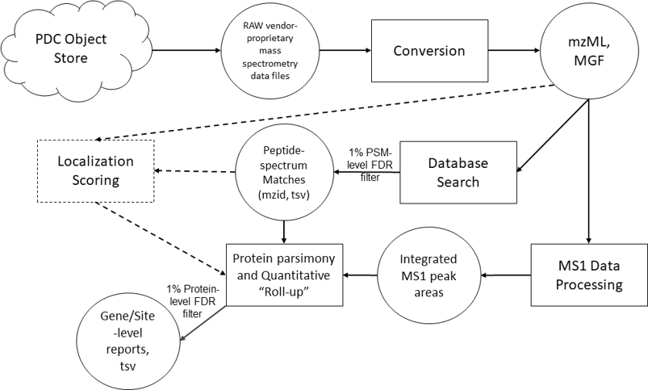
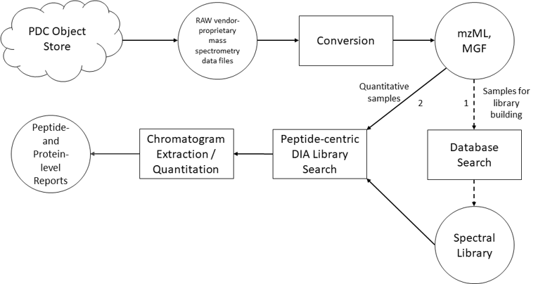

Data Harmonization
The goal of PDC data harmonization process is to transform proteomic data from disparate sources and workflows into derived forms by common data analysis methods and tools. The harmonization process is therefore useful for removing data analysis variables, enabling comparisons across datasets.
Harmonization starts with assigning standard identifiers, data integrity checks, adherence to standards (community-accepted vocabulary and nomenclature for clinical attributes, peptides, proteins, protein sequence variants, and modifications) and PDC data model.
Proteomic Data Harmonization
The PDC uses submitted raw mass spectrometry data files to produce derived analysis results which can be used to study identification of proteins and post-translational modifications (PTMs). All processing is done through Common Data Analysis Pipelines (CDAP). Whenever possible, quantitative results are also extracted from the raw data, enabling downstream analyses of differential expression between samples at the protein- or PTM site-level. A version of the CDAP will soon be available within the workspace for users to run on their own data files.Common Data Types
One goal of the PDC is to harmonize a diversity of proteomics data types. All current data types are mass spectrometry data acquired using data dependent acquisition (DDA), but pipelines are under construction for the analysis of data acquired using data independent acquisition (DIA) or SWATHTM. DDA deposited in the PDC so far includes label-free, iTRAQ4 and TMT10. The CDAP is capable of processing data from unenriched, phospho-, and glyco-enriched peptide samples.Common Data Analysis Pipeline for DDA
PDC uses the CDAP developed at NIST and Georgetown University and in use at the CPTAC Data Coordinating Center (described here and published here) as a starting point for DDA datasets. The pipeline is implemented in the Galaxy Framework that runs on Amazon Cloud. Software programs and parameters are also detailed in this document. In general, the pipeline proceeds in the following order:- Spectral conversion to standard formats from proprietary. This step also extracts peak area values for any reporter ion intensities, if an isobaric labeling strategy has been used (current tool: ReAdW4Mascot2.exe from NIST)
- Sequence database search (current tool: MSGF+ from PNNL)
- MS1 data processing used for label-free quantitation (current tool: ProMS from NIST)
- Phosphosite localization (i.e., scoring) if the sample has been enriched (current tool: PhosphoRS from the Mechtler Lab)
- Generalized parsimony and “roll-up” of any quantitative information to the gene level (from the spectrum and peptide-levels). This step also includes normalization and calculation of individual aliquot values to log2ratio values for iTRAQ4 and TMT10 studies. (current tool: PSMLab from the Edwards Lab at Georgetown)

The results of the pipeline for a multiplexed labeling study is a matrix in which rows are genes and columns are aliquots (samples). Values in the cells represent protein (gene) expression for that sample relative to a common reference (typically a pooled sample).
Common Data Analysis Pipeline for DIA
Our current pipeline for analysis of data independent acquisition is based on work in the MacCoss Lab. If available, sample or pool-specific data are used to build a spectral library. The peptides in the library are then scored assigned match scores for each DIA data file.- Spectral conversion to standard formats from proprietary (current tool: msconvert)
- If library building data files were also provided, those files are then searched using either a DDA or a DIA search engine, depending on the input data type. For DDA, Crux is used. For DIA data, PECAN is used.
- Following database searching of the library data, a library is generated from the search results after post search processing with Percolator
- The spectral library is then used to search each data file (current tool: EncyclopeDIA)
- The output can be written directly to reports and viewed in Skyline
